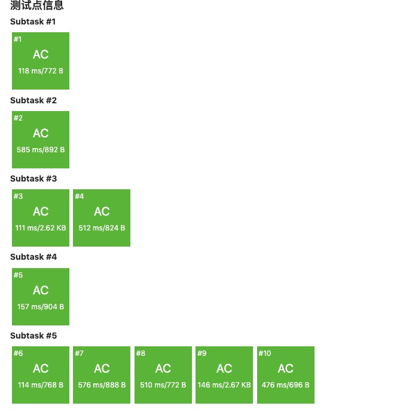
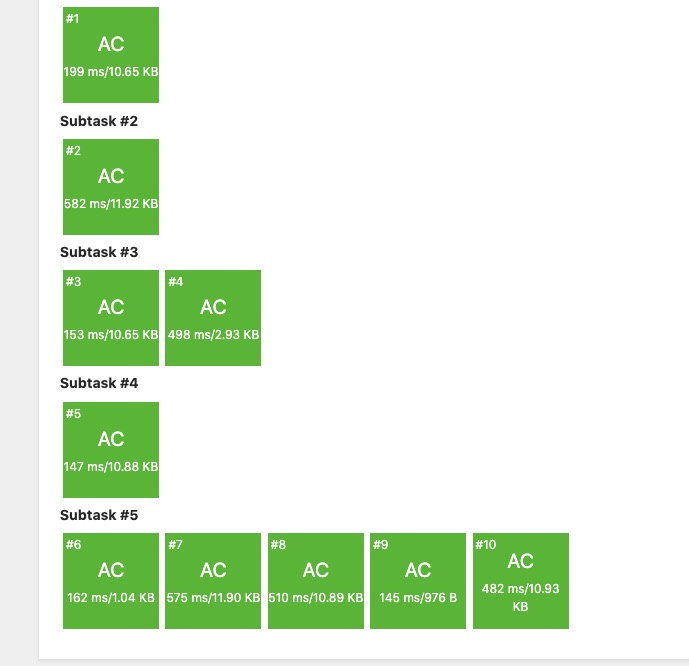

一般在考场上写出这种东西的人，我们称之为：巨 魔 码 怪。
小 R 学会微积分中求导这一概念后，他的数学老师要求他开始做一部分导数的练习题加深自己的理解。
但颖悟绝伦的小 R 对繁复的练习题并不感兴趣。他希望你帮他设计一个程序，计算一个给定函数 $f(x)$ 的导数。
第一行一个正整数 T，表示小 R 要完成的练习题数量，亦即测试数据的组数。
每组测试数据的第一行是一个非空字符串，描述了输入的函数 $f(x)$。设 $p=998244353$。
字符串中可能包含的元素有：
1、系数为 $1$ 的单项式，包括 $x^2,x^0$ 等，我们保证指数为非负整数为 $1$ 时不省略，不会超过 $p-1$。所有幂号用 ^ 代替。
2、常数，如 $0,19260817$ 等；我们保证一切常数是非负整数且不超过 $p-1$。
3、复合函数。将以上两种函数组合的方式可以为加乘幂，括号等。数学中会省略乘号和括号，但我们保证任意情况下都不省略（也不会无意义冗余，即不存在 ((x)),(3)+(4)）；保证任何指数都是常数，即不存在 $x^{g(x)}$的情况。
测试数据的第二行为两个整数，值在$[0,p)$之间。你需要输出两个整数，表示这些整数代入导函数后的值模 $p$ 的结果。
本题中认为 $0^0=1$。
这道题也是很神= =
首先求导不求导的，先把树建出来，然后就会发现这个题的本质还是合并左右孩子。但是有一点很神，就是合并时要用扩展欧拉定理合并，原因是我们存在^这个运算。然后就考虑我们可以存储当x=v时对所有扩欧展开时的模数取模，更新的时候按秩更新就好了= =
还有就是在调这题时，我发现了一个以前程序的bug。
关于建树时的鬼畜判断，我当时是这么加的判断:
1 | void Init(){ |
这东西每次memset显然会超时，于是便采用一个退化版本
1 | inline int build(int l, int r){ |
tm当时自己因为这个调了好久也是很佛了。
1 |
|
还有，就是当时自己觉得自己已经理解了怎么操作就开始瞎写，结果就开始疯狂地挂，于是发现了这两个函数：
1 | ll mul(ll a,ll b,ll p){ // 2 |
平心而论，这两个函数是最不起眼的两个函数……但是对于某些老年OI降智选手确实致命性的打击：这两个函数不是凭空存在的，是为了配合扩展欧拉定理的！
基本形式大概就是：
也就是说最后的$+p$是必要的= = 这也是很佛。。
然后就是我当时还奇怪为什么兔队写的这么快，结果写上一篇文章时发现原来是自己的复杂度写假了，如果按上文中的写，复杂度应该是$O(q|S|\log|S|\log^2p)$。
于是为了优化掉这个log我们需要写一遍后缀表达式版的求导= =
1 |
|
写完我才发现我的大常数是救不了的了，兔爷写的60ms，我写的1120ms，这tm20倍的常数宛如写了$\rm{|S|\log|S|}$……不过说会话比建树的快了些。
看了看题解似乎应该是兔爷多写了一层欧拉展开，于是又消掉一个log = =
$O(q|S|\log^2 p)$ 
$O(q|S|\log |S| log^2 p)$ 
卡常真是荼毒人名= =